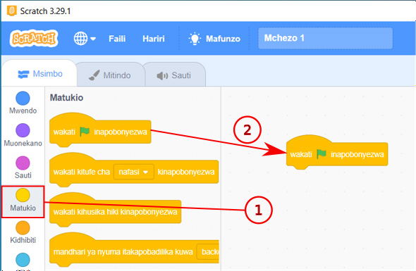

Kazi ya kufanya namba 6: Kuunda mchezo unaomfanya ‘Sprite’ (Cat) ajongee kwenda mbele
Hatua
1.
Bofya au tumia mishale menyu ya bloku za ‘Matukio’ kama inavyoonekana katika Kielelezo namba 22.
2.
Buruta au tumia mishale, kisha udondoshe bloku ya ‘wakati inapobonyezwa’ kwenye eneo la kuandikia kama inavyoonekana katika Kielelezo namba 22.

Maelezo ya picha: Menyu ya Matukio imechaguliwa kwenye Scratch au Quorum. Bloku ya ‘wakati inapobonyezwa’ inaburutwa au inahamishwa kwa mishale na kudondoshwa kwenye eneo la kuandikia.Kielelezo namba 22: Kuburuta au kutumia mishale na kudondosha bloku ya wakati inapobonyezwa kwenye eneo la kuandikia.
3.
Bofya au tumia mishale menyu ya bloku za ‘Mwendo’ kama inavyooneshwa katika Kielelezo namba 23.
4.
Buruta au tumia mishale, kisha udondoshe bloku ya ‘songa hatua’ kwenye eneo la kuandikia.
5.
Unganisha bloku ya ‘songa hatua’ na bloku ya ‘wakati inapobonyezwa’.